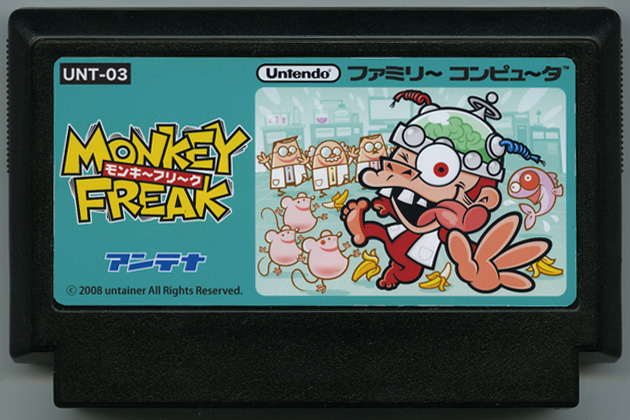

" MONKEY FREAK "
untainer（アンテナ）/ minamics（Illustrator）・no reason（Sound Creator）
Official Site
（箱裏面より抜粋）両親を動物実験により目の前で失い、自らも人類繁栄の為の犠牲となった被験猿「O-36号」。大量の放射能を身体中に浴び、意識が朦朧となりながらも研究所からの脱出を試みるが…？ 内容の過激さからわずか３日で回収騒ぎとなり、当時の話題をさらったパズルゲーム。